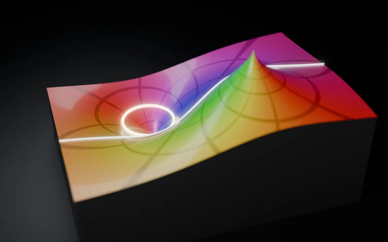
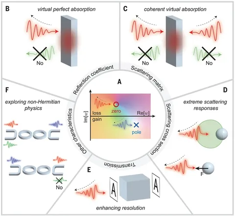
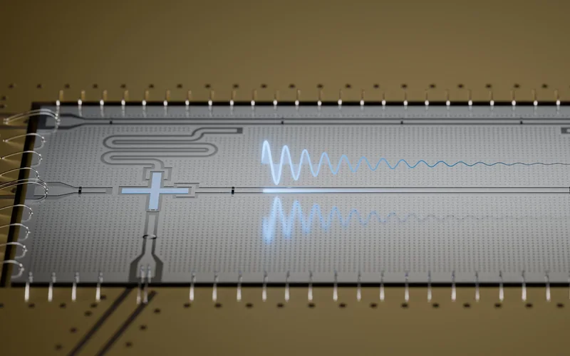
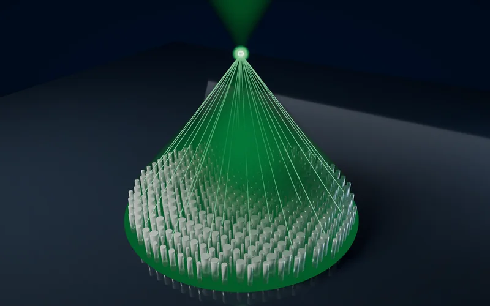
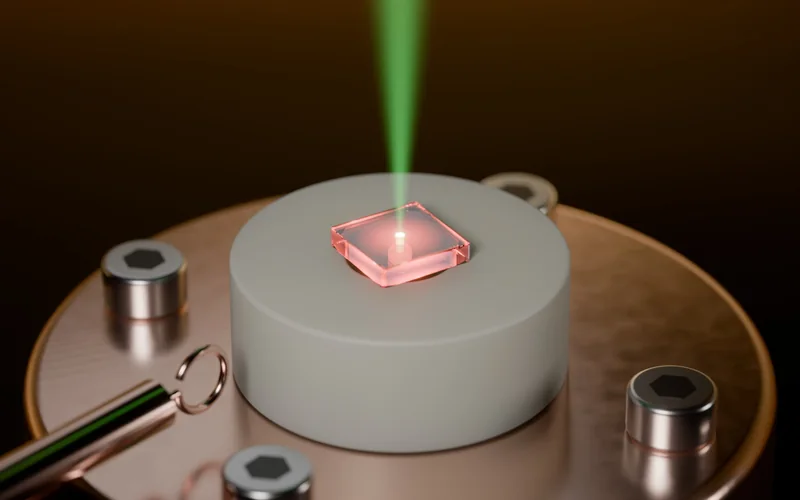
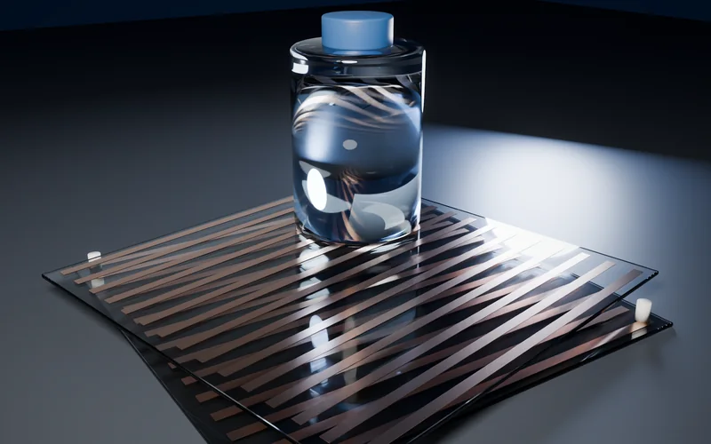
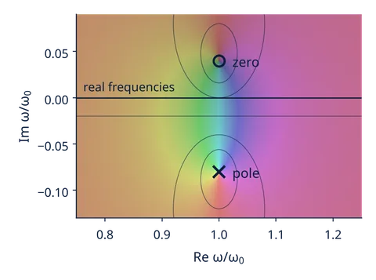

Research
We work on wave physics for quantum technologies: how the poles and zeros of a resonant system, and its electromagnetic environment, set what a device can do. We test this with theory, simulation, and measurements on microwave, photonic, and superconducting hardware.
- Complex-frequency electrodynamics and non-Hermitian scattering
- Quantum control and quantum-hardware diagnostics
- Circuit and cavity QED and photonic interfaces
- Nanophotonics, metasurfaces, and reconfigurable antennas
- Quantum sensing, cryogenic sensing, and applied metrology
- Computational electromagnetics and quantum simulation

Complex-frequency electrodynamics and non-Hermitian scattering
The poles and zeros of a resonator lie off the real frequency axis, so a steady tone sees only part of its response. We drive resonators with signals that grow or decay in time. Such complex-frequency excitations give virtual absorption, scattering beyond steady-state bounds, and full 2π phase control at constant amplitude.
Key papers
- Complex-Frequency Chirped Pulses for Trajectory-Resolved ScatteringA. Krasnok and D. SeletskiyACS Photonics 13(21), 6322–6332 (2026).
- Constant-Amplitude 2π Phase Modulation from Topological Pole-Zero WindingA. KrasnokPhysical Review Letters 137(5), 053801 (2026).
- Complex-Frequency Excitations in Photonics and Wave PhysicsS. Kim, A. Krasnok, and A. AlùScience 387(6741), eado4128 (2025).
All papers on complex-frequency electrodynamics and non-Hermitian scattering

Quantum control and quantum-hardware diagnostics
Qubits share lines, cavities, and packages, so a pulse meant for one qubit also reaches its neighbors. We design waveforms that load only the chosen circuit mode, with less reflection and crosstalk, and diagnostics that include the real electromagnetic environment of a device.
Key papers
- Constant-Amplitude 2π Phase Modulation from Topological Pole-Zero WindingA. KrasnokPhysical Review Letters 137(5), 053801 (2026).
- Selective Excitation of Coupled Resonators via Complex Frequency Driving: Enhanced Efficiency and Crosstalk SuppressionD. Trivedi, L. Niaz, A. Alù, and A. KrasnokACS Photonics 12(11), 5929-5938 (2025).
- Reflection-Zero Waveforms for Selective Loading in Shared-Line Superconducting Qubit CircuitsD. Trivedi, A. Bhowmik, L. Niaz, and A. KrasnokAdvanced Quantum Technologies 9(9), e70441 (2026). Selected for a cover feature.
All papers on quantum control and quantum-hardware diagnostics

Circuit and cavity QED and photonic interfaces
Superconducting cavities and qubits store and process quantum information at millikelvin temperatures. We study cavities, resonators, and couplers with better isolation and bandwidth, metamaterials for cryogenic hardware, and wireless links that carry signals out of the cold stages.
Key papers
- Reflection-Zero Waveforms for Selective Loading in Shared-Line Superconducting Qubit CircuitsD. Trivedi, A. Bhowmik, L. Niaz, and A. KrasnokAdvanced Quantum Technologies 9(9), e70441 (2026). Selected for a cover feature.
- Metamaterials in Superconducting and Cryogenic Quantum TechnologiesA. KrasnokApplied Physics Reviews 13, 021311 (2026).
- Superconducting Microwave Cavities and Qubits for Quantum Information SystemsA. Krasnok, P. Dhakal, A. Fedorov, P. Frigola, M. Kelly, and S. KutsaevApplied Physics Reviews 11(1), 011302 (2024).
All papers on circuit and cavity QED and photonic interfaces

Nanophotonics, metasurfaces, and reconfigurable antennas
Dielectric resonators, metasurfaces, and polaritonic crystals shape light, microwaves, and near fields with structures smaller than the wavelength. Our work ranges from all-dielectric nanoantennas to topological polaritons in twisted van der Waals bilayers.
Key papers
- From Flat-Optics Concept to Qualified Hardware: Skills Map for the Meta-Optics and Diffractive Optics WorkforceI. Torres and A. KrasnokOptical Engineering 65(10), 102007 (2026).
- Anomalies in Light ScatteringA. Krasnok, D. G. Baranov, H. Li, M.-A. Miri, F. Monticone, and A. AlùAdvances in Optics and Photonics 11(4), 892-951 (2019).
- Low-Symmetry NanophotonicsA. Krasnok and A. AlùACS Photonics 9(1), 2-24 (2022).
All papers on nanophotonics, metasurfaces, and reconfigurable antennas

Quantum sensing, cryogenic sensing, and applied metrology
We design sensors for cryogenic stages, MRI scanners, and aging infrastructure: diamond and atomic magnetometers for bridge inspection, metasurfaces that shape the radio-frequency field in 3 T MRI, and a cryogenic dielectric antenna for wireless sensing outside the 10 K stage.
Key papers
- Quantum Magnetometers for Infrastructure Inspection and MonitoringM. M. Hasan, I. Torres, and A. KrasnokMeasurement 290, 122735 (2026).
- Quantum sensors use atoms, electrons and light as ultra-steady rulers, detecting faint motion, magnetism and gravity for navigation, medicine and scienceA. KrasnokThe Conversation (2026).
- Twist-Tuned Bilayer Metasurface for 3 T MRII. Torres, R. Rodriguez, R. W. Laird, A. R. Laird, and A. KrasnokJournal of Physics D: Applied Physics, under consideration. arXiv:2603.22639 (2026).
All papers on quantum sensing, cryogenic sensing, and applied metrology


Computational electromagnetics and quantum simulation
Full-wave electromagnetic solvers, circuit models of scattering anomalies, and QuTiP and Qiskit models of quantum systems connect our designs with measurements. NVIDIA awarded the lab 32,000 A100 GPU-hours in 2026 for this work.
Key papers
- Anomalies in Light Scattering: A Circuit-Model ApproachD. Trivedi, A. Madanayake, and A. KrasnokPhysical Review Applied 22(3), 034061 (2024).
- Circuit Theory for Anomalies in Light ScatteringD. Trivedi, A. Madanayake, and A. KrasnokIEEE RAPID (2024).
- From False Roots to Phasors: Negative and Complex Numbers in Mathematics, Physics, and Electrical EngineeringA. KrasnokarXiv:2603.21445 (2026).
All papers on computational electromagnetics and quantum simulation
